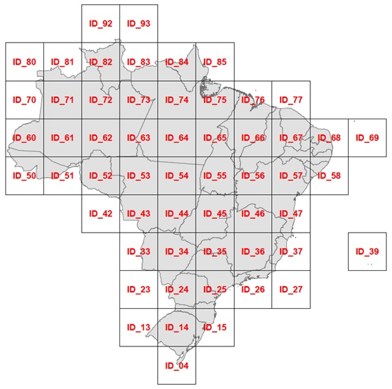
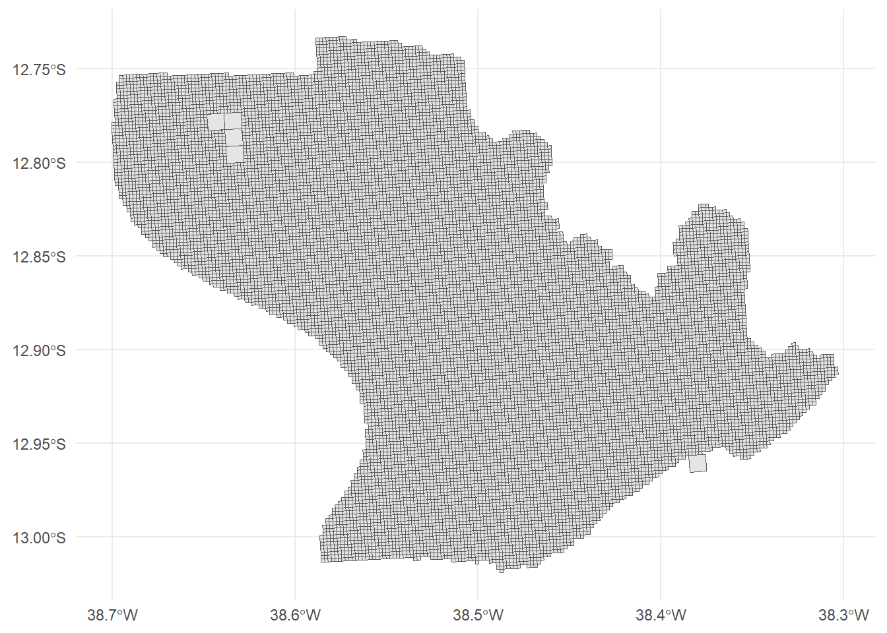
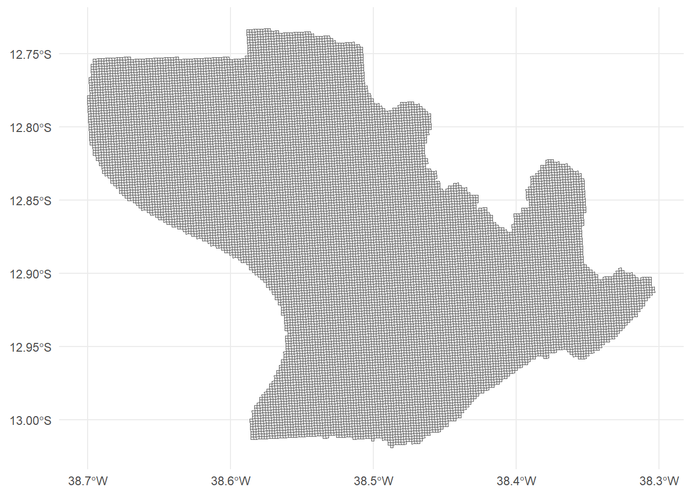
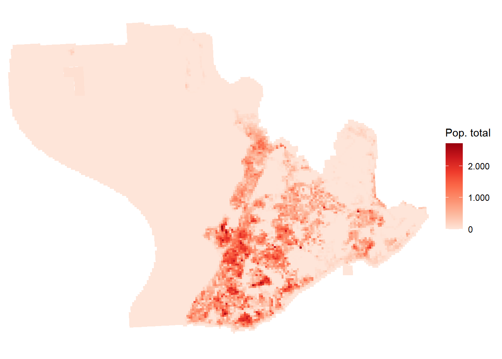
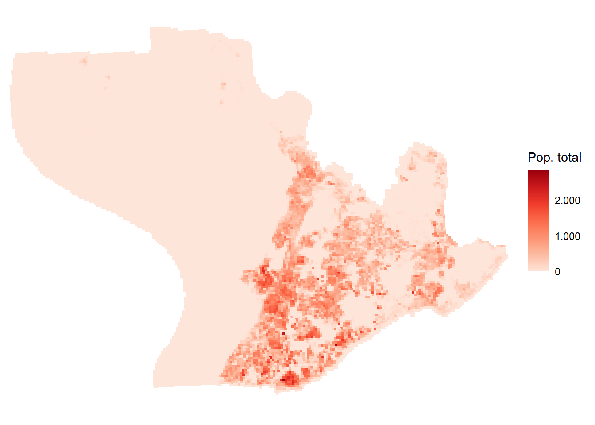
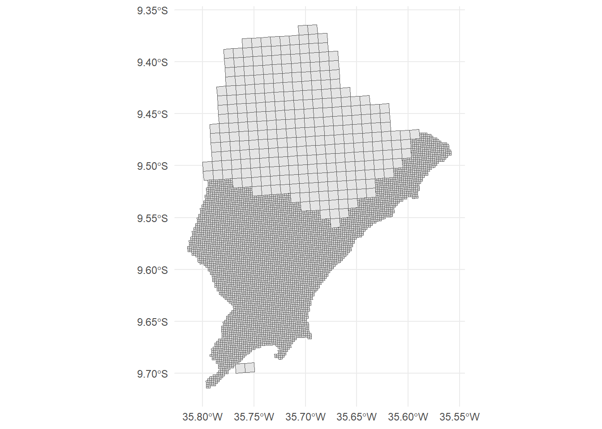
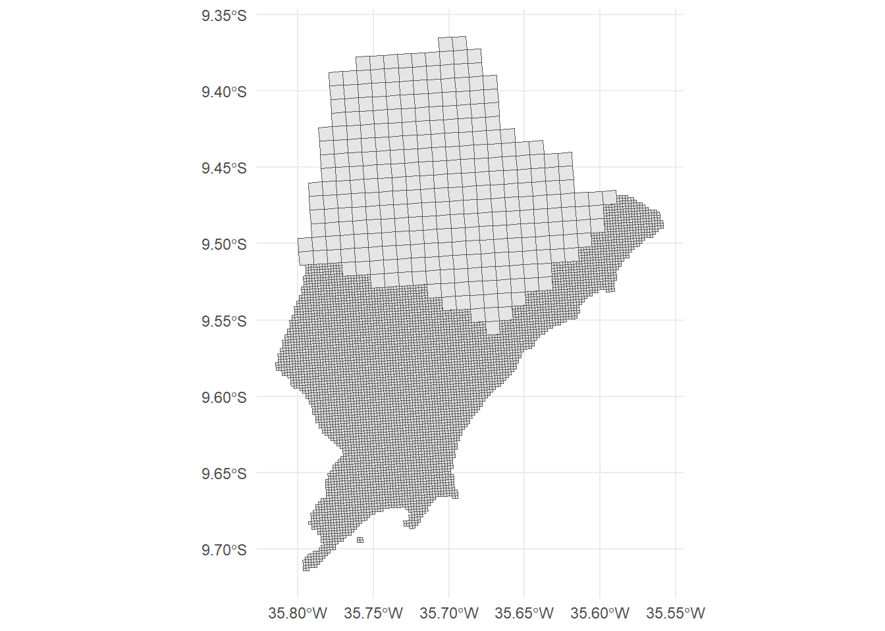
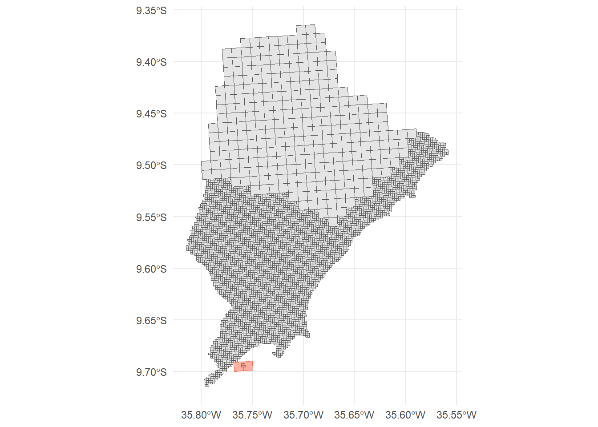
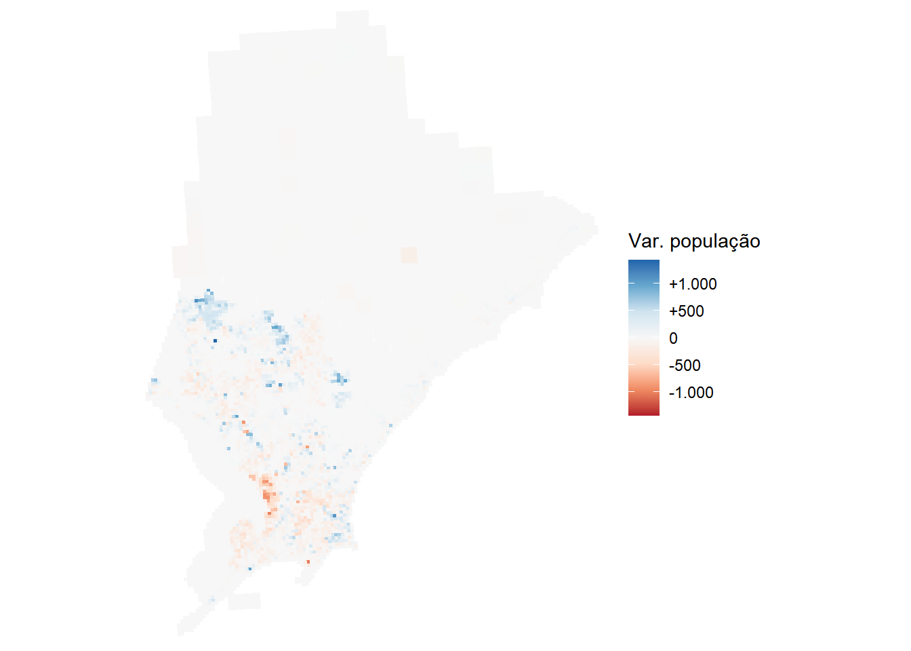
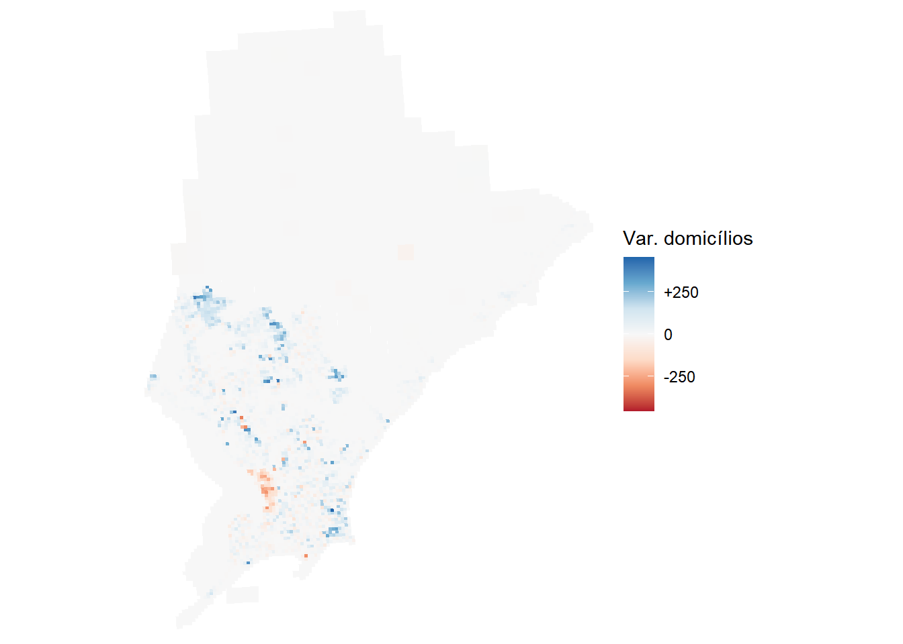

| Produto | Resolução espacial | Variáveis disponíveis |
|---|---|---|
| Microdados da amostra | Área de ponderação | Todas os itens do Questionário da Amostra |
| Agregados por setor | Setor censitário | Somente itens do Questionário Básico |
| Grade Estatística | 200 x 200 m (urbano) / 1 x 1 km (rural) | Totais de população e domicílios (2) |
9 Grade Estatística
9.1 Introdução
Nos capítulos anteriores, exploramos os dois principais produtos tabulares do Censo Demográfico: os Agregados por Setor Censitário e os Microdados da Amostra. Juntos, eles cobrem um amplo espectro de possibilidades analíticas, mas cada um com seus próprios limites. Os Agregados chegam ao nível do setor censitário com milhares de variáveis. Os Microdados oferecem uma riqueza temática ainda maior, porém com resolução espacial restrita às áreas de ponderação. Neste capítulo, apresentaremos um terceiro produto do Censo que ocupa uma posição singular nesse espectro, a Grade Estatística.
A Grade Estatística é o produto do Censo de maior resolução espacial disponível ao público, com células de 200 x 200 metros nas áreas urbanas e 1 x 1 quilômetro nas áreas rurais. Essa granularidade espacial superior vem acompanhada, no entanto, de uma restrição temática significativa. A Grade disponibiliza apenas duas variáveis, a população total e o número de domicílios ocupados. A restrição existe por razões de sigilo estatístico, uma vez que células muito pequenas poderiam permitir a identificação de indivíduos. A Tabela 9.1 resume o posicionamento da Grade em relação aos produtos do Censo já vistos até então.
Apesar das poucas variáveis, a Grade possui um conjunto de características que a torna um produto analítico poderoso, especialmente para estudos de distribuição espacial da população e para comparações entre os Censos de 2010 e 2022.
A distribuição de dados censitários em uma malha regular de células retangulares teve início no Japão em 1969, quando o Escritório de Estatística do país publicou dados do Censo de Tóquio nesse formato. Nos anos seguintes, países nórdicos como a Finlândia adotaram abordagens semelhantes para seus próprios Censos, e o modelo se difundiu gradualmente por outros países da Europa e da Ásia.
No Brasil, a viabilização da Grade Estatística dependeu de um salto tecnológico significativo ocorrido no Censo 2010. Naquela edição, o IBGE introduziu a coleta eletrônica de dados com GPS e o Cadastro Nacional de Endereços para Fins Estatísticos (CNEFE), que geocodificou os endereços de todos os domicílios visitados. Essa infraestrutura de geocodificação permitiu, pela primeira vez, associar cada domicílio a uma posição geográfica precisa e, consequentemente, agregar a população a células de tamanho fixo. O produto foi publicado em 2016 com dados do Censo 2010 (IBGE, 2016) e atualizado em 2024 com dados do Censo 2022 (IBGE, 2025). As próximas seções detalham as características metodológicas que sustentam essas possibilidades analíticas e mostram como trabalhar com a Grade no R.
9.2 Aspectos metodológicos
As células da Grade são classificadas como urbanas ou rurais de acordo com a Malha de Setores Censitários. Células que intersectam setores urbanos recebem dimensões de 200 x 200 metros, enquanto as demais recebem 1 x 1 quilômetro. Todas as células são projetadas no sistema de referência SIRGAS 2000, utilizando a Projeção Cônica Equivalente de Albers com meridiano central em -54°, garantindo que áreas e densidades sejam comparáveis em todo o território nacional.
Além da resolução básica, a Grade é disponibilizada em seis níveis hierárquicos: 200m/1km, 5km, 10km, 50km, 100km e 500km. Os níveis superiores resultam da agregação dos inferiores, e cada célula possui um identificador único que é preservado ao longo da hierarquia e entre as edições do Censo. A articulação das células no nível de maior agregação espacial (500km) pode ser vista na Figura 9.1.

As estatísticas das células são derivadas dos microdados do universo do Censo Demográfico. Lembre-se que o universo compreende a totalidade dos domicílios visitados pelo recenseador, independentemente de terem respondido ao questionário básico ou ao da amostra. Esse ponto é relevante porque os microdados do universo não são disponibilizados ao público, uma vez que temos acesso apenas aos microdados da amostra, produto abordado no Capítulo 8. A vinculação entre os microdados do universo e as células da Grade é feita pelas coordenadas geográficas dos domicílios registradas no CNEFE.
Os campos estatísticos disponíveis nos arquivos da Grade diferem entre as duas edições, como mostra a Tabela 9.2. Os nomes dos campos da edição de 2022 constam no Quadro 4 das notas metodológicas do IBGE (IBGE, 2025). O documento metodológico de 2010 (IBGE, 2016) não apresenta um dicionário de dados equivalente, mas os nomes e descrição dos campos dessa edição podem ser consultados em fontes como o OSM Wiki (OpenStreetMap Wiki contributors, 2024). Além disso, note que a versão de 2010 disponibiliza totais de população por sexo (masc e fem), variáveis ausentes na edição de 2022. Os nomes dos campos também mudaram entre as edições, o que exige atenção ao realizar junções por ID_UNICO entre as duas bases.
| Campo (2010) | Campo (2022) | Descrição |
|---|---|---|
| ID_UNICO | ID_UNICO | Identificador único da célula |
| POP | TOTAL | Total de população |
| DOM_OCU | TOTAL_DOM | Total de domicílios ocupados (particular e coletivo) |
| MASC | — | Total de pessoas do sexo masculino |
| FEM | — | Total de pessoas do sexo feminino |
| nome_1km ... nome_500km | nome_1km ... nome_500KM | Código da célula em cada nível hierárquico |
| QUADRANTE | QUADRANTE | Quadrante de articulação (500 x 500 km) |
É relevante mencionar que o número de células na resolução 200m/1km também muda entre os Censos. O Censo 2010 gerou 13,3 milhões de células na resolução básica, sendo 4.610.350 de 200m (34,7%) e 8.676.139 de 1km (65,3%). Em 2022, esse número cresceu para 14,1 milhões, um acréscimo de cerca de 841 mil células, com 5.486.725 células de 200m (38,84%) e 8.641.084 células de 1km (61,16%). Isso ocorre porque, ao se tornarem urbanizadas1, algumas áreas que estavam em células de 1km são subdivididas em células de 200m. Cabe destacar que células de 200m que porventura tenham se tornado rurais não passam por um processo de agregação2 para a resolução de 1km em um Censo posterior.
Uma diferença metodológica importante separa as duas edições. No Censo 2010, a geocodificação dos endereços ainda era incompleta, de modo que parte dos domicílios precisou ser alocada às células por meio de uma metodologia híbrida que combinava agregação direta com desagregação proporcional por área. Esse processo introduziu alguma imprecisão na distribuição espacial da população e gerou uma perda de dados de até 5% em algumas áreas. No Censo 2022, a geocodificação foi realizada em seis níveis de qualidade posicional. Os níveis 5 e 63, de maior incerteza, foram excluídos da Grade, mas eles representavam apenas 0,028% da população total, tornando a perda de dados praticamente nula (IBGE, 2025). Detalhes técnicos sobre a precisão das coordenadas do CNEFE serão melhor explicitados no próximo capítulo.
A Tabela 9.3 sintetiza as principais diferenças metodológicas entre os Censos de 2010 e 2022.
| Aspecto | Censo 2010 | Censo 2022 |
|---|---|---|
| Método de alocação | Híbrido (agregação + desagregação proporcional por área) | Agregação direta de endereços geocodificados |
| Geocodificação | Incompleta, complementada por alocação por área | Baseada nos 4 maiores níveis de qualidade; níveis inferiores (5 e 6) excluídos |
| Perda de dados | Até 5% em algumas regiões | 0,028% da população |
| Total de células (resolução básica) | 13,3 milhões | 14,1 milhões |
Com esse panorama metodológico em vista, a próxima seção examina as principais vantagens e limitações da Grade para fins analíticos.
9.3 Vantagens e limitações
A Grade apresenta quatro vantagens analíticas que a distinguem dos demais produtos do Censo (IBGE, 2016). A primeira é a estabilidade espaço-temporal. Como o identificador único de cada célula é idêntico nas edições de 2010 e 2022, isso contrasta diretamente com os setores censitários e áreas de ponderação, cujas fronteiras e identificadores são redesenhados a cada Censo para acompanhar o crescimento urbano e as necessidades operacionais da coleta. Salvador, por exemplo, tinha 3.592 setores censitários em 2010 e 4.555 em 2022. Uma comparação direta setor a setor entre as duas edições seria inviável, pois a maioria dos setores de 2010 não tem correspondente exato em 2022. Com a Grade, a comparação é feita simplesmente por meio de uma junção de ambas as tabelas pelo identificador único, como veremos na Seção 9.5.
A segunda vantagem é a adaptação a recortes espaciais personalizados. As células da Grade funcionam como blocos de construção que podem ser agregados, de forma aproximada, a qualquer geometria de interesse, como zonas de tráfego de pesquisas de mobilidade, distritos sanitários ou bacias hidrográficas. Ao somar as células que intersectam um recorte de interesse, obtém-se uma estimativa de população para esse recorte sem necessidade de microdados ou de técnicas de interpolação.
A terceira é a hierarquia e flexibilidade. Os seis níveis de resolução de quadrículas disponíveis no mesmo sistema de referência permitem navegar entre escalas de análise com facilidade. Uma análise que começa na escala metropolitana (nível 50km) pode ser aprofundada progressivamente até a resolução máxima sem mudar de sistema de coordenadas ou de conjunto de dados.
A quarta vantagem é a versatilidade de representação. A estrutura retangular regular da Grade permite tratar os dados tanto como vetor quanto como raster. Essa dualidade amplia o conjunto de ferramentas analíticas disponíveis, abrindo a possibilidade de aplicar métodos de processamento de imagem e análise espacial matricial.
Todavia, há restrições importantes com relação ao uso da Grade. A principal delas é o reduzido número de variáveis disponíveis. Com apenas população total e domicílios ocupados, ela não permite análises de renda, escolaridade, raça, acesso a serviços ou qualquer outro atributo socioeconômico. Para essas análises, os Microdados e os Agregados continuam sendo indispensáveis.
Uma segunda limitação diz respeito à geometria retangular das células. Como discutido no Capítulo 7 ao apresentar as grades hexagonais H3, células quadradas possuem dois tipos de vizinhança, os que compartilham aresta e os que compartilham apenas um vértice, com distância entre centros cerca de 41% maior neste último caso. Essa assimetria implica que análises de proximidade e acessibilidade, nas quais a equidistância entre vizinhos é uma propriedade desejável, produzem resultados geometricamente menos precisos em grades retangulares do que em grades hexagonais. Acrescenta-se ainda que anéis concêntricos de hexágonos aproximam círculos com mais fidelidade do que anéis quadrados, tornando a delimitação de zonas de influência e buffer mais natural naquele formato.
Por fim, a forma de distribuição dos dados cria uma etapa adicional de trabalho antes do download. A Grade Estatística na sua melhor resolução (200m/1km) não é disponibilizada como um arquivo único para o país ou por município, mas em recortes por quadrantes de 500 x 500 km. Antes de baixar os dados, é preciso identificar quais quadrantes cobrem o município de interesse. A próxima seção explica como fazer isso.
9.4 Obtendo e mapeando os dados no R
9.4.1 O sistema de quadrantes
O IBGE distribui a Grade Estatística em recortes correspondentes às células do nível mais agregado da hierarquia, com os quadrantes de 500km de lado, conforme visto na Figura 9.1. Cada quadrante possui um identificador numérico, e o primeiro passo para baixar a Grade de um município é identificar qual ou quais quadrantes o cobrem.
Para identificar o código do quadrante de um município, o mapa interativo da Figura 9.2 permite explorar a articulação dos quadrantes sobre o território nacional. Navegue até o município de interesse para verificar qual ou quais quadrantes o cobrem.
Ao localizar Salvador (BA), por exemplo, é possível perceber que a cidade está atravessada pela fronteira entre dois quadrantes: o ID 47, que cobre a porção Sul, e o ID 57, que cobre a porção Norte. Esse tipo de situação requer baixar e combinar os dois arquivos antes de recortar a Grade para os limites do município. O pacote geobr também disponibiliza o objeto grid_state_correspondence_table, uma tabela de correspondência entre estados e quadrantes que serve como ponto de partida quando a inspeção visual não é necessária. Os arquivos de cada quadrante estão disponíveis no FTP do IBGE, separados por edição do Censo.
NotaDownload da Grade via
geobr e FTP do IBGE
O pacote geobr disponibiliza a função read_statistical_grid() para download de cada quadrícula de 500km de resolução da Grade Estatística, mas apenas para a edição de 2010. Por exemplo, para baixar a quadrícula de ID 45, basta fazer read_statistical_grid(code_grid = 45, year=2010). Todavia, a edição de 2022 ainda não está disponível no pacote. Sendo assim, os códigos desta seção utilizam o download direto do servidor FTP do IBGE, que disponibiliza os arquivos de ambas as edições organizados por quadrante:
https://geoftp.ibge.gov.br/recortes_para_fins_estatisticos/grade_estatistica/
9.4.2 Obtenção da grade por município
Definidos o(s) quadrante(s) a ser(em) utilizado(s), o fluxo de trabalho de forma programática envolve quatro etapas: (i) definir uma função auxiliar de download; (ii) obter a geometria do município; (iii) baixar os quadrantes; e (iv) recortar a(s) célula(s) aos limites municipais. Caso queira obter diretamenteCada etapa é apresentada a seguir.
(i) Função auxiliar de download:
Como o IBGE distribui a Grade em arquivos ZIP contendo shapefiles, é conveniente encapsular as etapas repetitivas em uma função. A função ler_quadrante() recebe uma URL como argumento e retorna um objeto sf pronto para uso. Internamente, tempfile() cria caminhos temporários (um para o ZIP baixado e outro para o diretório de extração) sem gravar nada em disco de forma permanente. download.file() realiza o download com mode = "wb" (escrita binária), opção obrigatória no Windows para evitar corrupção de arquivos ZIP. unzip() extrai o conteúdo no diretório temporário, e list.files() com o padrão "\\.shp$" localiza o shapefile dentro da estrutura de subpastas resultante. Por fim, sf::st_read() lê o shapefile e retorna o objeto sf.
library(tidyverse)
library(sf)
library(geobr)
ler_quadrante <- function(url) {
tmp_zip <- tempfile(fileext = ".zip")
tmp_dir <- tempfile()
download.file(url, tmp_zip, quiet = TRUE, mode = "wb")
unzip(tmp_zip, exdir = tmp_dir)
shp <- list.files(tmp_dir, pattern = "\\.shp$", recursive = TRUE,
full.names = TRUE)
sf::st_read(shp[1], quiet = TRUE)
}Os arquivos da Grade 2022 estão organizados no FTP do IBGE em um diretório fixo. Armazenamos esse caminho em um objeto para evitar inseri-lo como um texto longo ao construir as URLs de cada quadrante.
base_2010 <- paste0(
"https://geoftp.ibge.gov.br/recortes_para_fins_estatisticos/",
"grade_estatistica/censo_2010/"
)
base_2022 <- paste0(
"https://geoftp.ibge.gov.br/recortes_para_fins_estatisticos/",
"grade_estatistica/censo_2022/grade_estatistica/"
)(ii) Geometria do município:
Para recortar a Grade aos limites de Salvador, precisamos do polígono oficial do município. geobr::read_municipality() faz o download diretamente do IBGE usando o código municipal do IBGE (2927408 para Salvador). O argumento simplified = FALSE solicita a geometria em resolução completa, sem simplificação topológica, o que é importante para um recorte espacial preciso.
ssa <- geobr::read_municipality(
code_muni = 2927408,
simplified = FALSE,
year = 2022
)(iii) Download dos quadrantes:
Com a função ler_quadrante() definida e a URL base armazenada, basta chamá-la uma vez para cada quadrante que cobre Salvador. Os nomes dos arquivos no FTP seguem o padrão grade_idXX.zip, onde XX é o identificador numérico do quadrante.
## Grades 2010:
ge_id47_2010 <- ler_quadrante(paste0(base_2010, "grade_id47.zip"))
ge_id57_2010 <- ler_quadrante(paste0(base_2010, "grade_id57.zip"))
## Grades 2022:
ge_id47_2022 <- ler_quadrante(paste0(base_2022, "grade_id47.zip"))
ge_id57_2022 <- ler_quadrante(paste0(base_2022, "grade_id57.zip"))(iv) Combinação e recorte espacial
Os dois objetos sf resultantes têm as mesmas colunas e podem ser empilhados com rbind(). Em seguida, st_transform() reprojeta a Grade para o mesmo sistema de referência do polígono de Salvador, etapa necessária sempre que dois objetos sf têm CRS distintos. Por fim, st_intersection() recorta as células aos limites do município, descartando tudo que está fora. O resultado, armazenado em ge_ssa2022, contém apenas as células da Grade de 2022 dentro de Salvador.
## Grades 500km IDs 47 e 57, 2010:
ge_ssa2022 <- rbind(ge_id47_2010, ge_id57_2010) |>
st_transform(st_crs(ssa)) |>
st_filter(ssa, .predicate = st_intersects)
## Grades 500km IDs 47 e 57, 2022:
ge_ssa2022 <- rbind(ge_id47_2022, ge_id57_2022) |>
st_transform(st_crs(ssa)) |>
st_filter(ssa, .predicate = st_intersects)9.4.3 Mapeando os resultados
Vamos primeiramente observar o formato destes arquivos de grade, relativo aos Censos de 2010 (Figura 9.3) e de 2022 (Figura 9.4), em que cada polígono corresponde a uma célula de 200m ou 1km, utilizando o ggplot2. Note como, em 2022, as poucas quadrículas do tipo rura de 2010 foram subdivididas em quadrículas do tipo urbano, de 200m4.
ge_ssa2010 |>
ggplot() +
geom_sf() +
theme_minimal()
ge_ssa2022 |>
ggplot() +
geom_sf() +
theme_minimal()
É igualmente interessante explorar as tabelas de dados que esses arquivos geográficos carregam consigo, visualizando seus primeiros registros:
head(ge_ssa2010)Simple feature collection with 6 features and 14 fields
Geometry type: POLYGON
Dimension: XY
Bounding box: xmin: -38.58608 ymin: -13.01352 xmax: -38.5784 ymax: -13.00976
Geodetic CRS: SIRGAS 2000
ID_UNICO nome_1KM nome_5KM nome_10KM nome_50KM
1 200ME66462N98410 1KME6646N9840 5KME6645N9840 10KME6640N9840 50KME6600N9800
2 200ME66464N98410 1KME6646N9840 5KME6645N9840 10KME6640N9840 50KME6600N9800
3 200ME66466N98410 1KME6646N9840 5KME6645N9840 10KME6640N9840 50KME6600N9800
4 200ME66468N98410 1KME6646N9840 5KME6645N9840 10KME6640N9840 50KME6600N9800
5 200ME66462N98412 1KME6646N9841 5KME6645N9840 10KME6640N9840 50KME6600N9800
6 200ME66464N98412 1KME6646N9841 5KME6645N9840 10KME6640N9840 50KME6600N9800
nome_100KM nome_500KM QUADRANTE MASC FEM POP DOM_OCU Shape_Leng
1 100KME6600N9750 500KME6300N9350 ID_47 0 0 0 0 0.007304921
2 100KME6600N9750 500KME6300N9350 ID_47 0 0 0 0 0.007304919
3 100KME6600N9750 500KME6300N9350 ID_47 0 0 0 0 0.007304916
4 100KME6600N9750 500KME6300N9350 ID_47 0 0 0 0 0.007304916
5 100KME6600N9750 500KME6300N9350 ID_47 0 0 0 0 0.007304895
6 100KME6600N9750 500KME6300N9350 ID_47 0 0 0 0 0.007304893
Shape_Area geom
1 3.333020e-06 POLYGON ((-38.58588 -13.013...
2 3.333018e-06 POLYGON ((-38.58401 -13.013...
3 3.333016e-06 POLYGON ((-38.58214 -13.013...
4 3.333016e-06 POLYGON ((-38.58027 -13.013...
5 3.332998e-06 POLYGON ((-38.58598 -13.011...
6 3.332995e-06 POLYGON ((-38.58411 -13.011...head(ge_ssa2022)Simple feature collection with 6 features and 10 fields
Geometry type: POLYGON
Dimension: XY
Bounding box: xmin: -38.58598 ymin: -13.01352 xmax: -38.37731 ymax: -12.95613
Geodetic CRS: SIRGAS 2000
ID_UNICO nome_1km nome_5KM nome_10KM nome_50KM
1 200ME66684N98460 1KME6668N9845 5KME6665N9845 10KME6660N9840 50KME6650N9800
2 200ME66686N98460 1KME6668N9845 5KME6665N9845 10KME6660N9840 50KME6650N9800
3 200ME66462N98410 1KME6646N9840 5KME6645N9840 10KME6640N9840 50KME6600N9800
4 200ME66464N98410 1KME6646N9840 5KME6645N9840 10KME6640N9840 50KME6600N9800
5 200ME66466N98410 1KME6646N9840 5KME6645N9840 10KME6640N9840 50KME6600N9800
6 200ME66468N98410 1KME6646N9840 5KME6645N9840 10KME6640N9840 50KME6600N9800
nome_100KM nome_500KM QUADRANTE TOTAL TOTAL_DOM
1 100KME6600N9750 500KME6300N9350 ID_47 0 0
2 100KME6600N9750 500KME6300N9350 ID_47 0 0
3 100KME6600N9750 500KME6300N9350 ID_47 0 0
4 100KME6600N9750 500KME6300N9350 ID_47 0 0
5 100KME6600N9750 500KME6300N9350 ID_47 0 0
6 100KME6600N9750 500KME6300N9350 ID_47 0 0
geom
1 POLYGON ((-38.38105 -12.958...
2 POLYGON ((-38.37918 -12.958...
3 POLYGON ((-38.58588 -13.013...
4 POLYGON ((-38.58401 -13.013...
5 POLYGON ((-38.58214 -13.013...
6 POLYGON ((-38.58027 -13.013...Note que o campo ID_UNICO de cada célula permite identificar sua resolução. Aqueles que começam com "200M" correspondem a células de 200m (áreas urbanas), enquanto os que começam com "1KM" correspondem a células de 1km (áreas rurais).
Entendida essa estrtura, podemos produzir alguns mapas coropléticos. Para o mapa de 2010 (Figura 9.5), observe que passamos a variável POP no mapeamento estético da cor de preenchimento dos polígonos (fill) e editamos essa coloração para a paleta “Reds” em scale_fill_distiller(). Neste caso, quanto mais intenso na cor vermelha, maior a polulação naquela quadrícula. No caso do mapa de 2022 (Figura 9.6), alteramos apenas a variável para TOTAL.
ggplot(ge_ssa2010) +
geom_sf(aes(fill = POP), color = NA) +
scale_fill_distiller(
palette = "Reds",
direction = 1,
name = "Pop. total",
na.value = "gray90",
labels = scales::label_number(big.mark = ".", decimal.mark = ",")
) +
coord_sf(expand = FALSE) +
theme_minimal() +
theme(
axis.text = element_blank(),
axis.ticks = element_blank(),
panel.grid = element_blank()
)
ggplot(ge_ssa2022) +
geom_sf(aes(fill = TOTAL), color = NA) +
scale_fill_distiller(
palette = "Reds",
direction = 1,
name = "Pop. total",
na.value = "gray90",
labels = scales::label_number(big.mark = ".", decimal.mark = ",")
) +
coord_sf(expand = FALSE) +
theme_minimal() +
theme(
axis.text = element_blank(),
axis.ticks = element_blank(),
panel.grid = element_blank()
)
Os dois mapas de população revelam a distribuição espacial de Salvador com uma granularidade muito superior à dos setores censitários. Porém, a comparação visual entre eles para verificar onde houve crescimento ou retração entre as duas edições é mais difícil. A próxima seção explora esse potencial comparativo de forma sistemática, usando Maceió como caso de análise. Essa escolha não é acidental e revela o poder da Grade Estatística de mapear fenômenos importantes como deslocamentos populacionais significativos causados por desastres ambientais.
9.5 Variação populacional entre Censos: o caso de Maceió
A estabilidade do identificador ID_UNICO entre as edições do Censo é a vantagem mais distintiva da Grade Estatística. Ela permite comparar diretamente a população e os domicílios de cada célula entre 2010 e 2022, identificando onde houve crescimento, estagnação ou declínio com uma resolução espacial de 200 metros. Para ilustrar essa capacidade, analisaremos o caso de Maceió (AL), onde esse tipo de comparação revela um fenômeno de grande impacto social e urbano.
Entre os dois Censos, a capital alagoana viveu os afundamentos do solo causados pela mineração de sal-gema, especialmente nos bairros de Pinheiro, Mutange, Bebedouro e Bom Parto. A subsidência progressiva do terreno, decorrente da dissolução das cavernas subterrâneas de onde o sal era extraído, tornou inabitáveis vastas áreas residenciais nesses bairros. A partir de 2018, o processo de evacuação compulsória de moradores se intensificou, resultando no deslocamento de dezenas de milhares de pessoas até o período do Censo 2022. O impacto desse fenômeno na distribuição espacial da população é precisamente o tipo de mudança que a comparação entre grades censitárias é capaz de revelar.
Maceió está integralmente contida no quadrante ID 58. O código abaixo realiza o download das grades de 2010 e 2022 para esse quadrante e recorta as células para os limites do município, aproveitando o código que já havíamos produzido antes.
library(tidyverse)
library(sf)
library(geobr)
# Geometria de Maceió
mcz <- geobr::read_municipality(
code_muni = 2704302,
simplified = FALSE,
year = 2022
)
# Grade nos dois anos para o quadrante 58
ge_id58_2010 <- ler_quadrante(paste0(base_2010, "grade_id58.zip"))
ge_id58_2022 <- ler_quadrante(paste0(base_2022, "grade_id58.zip"))
ge_mcz2010 <- ge_id58_2010 |>
st_transform(st_crs(mcz)) |>
st_filter(mcz, .predicate = st_intersects)
ge_mcz2022 <- ge_id58_2022 |>
st_transform(st_crs(mcz)) |>
st_filter(mcz, .predicate = st_intersects)Com os dados, é possível observar a grade de Maceió em ambos os anos em Figura 9.7 e Figura 9.8:
ge_mcz2010 |>
ggplot() +
geom_sf() +
theme_minimal()
ge_mcz2022 |>
ggplot() +
geom_sf() +
theme_minimal()
Com os objetos ge_mcz2010 e ge_mcz2022 carregados, é tentador comparar as células diretamente por ID_UNICO. Essa abordagem, porém, ignora a questão da subdivisão da grade decorrente da urbanização. Como resultado, há células que existem como 1 km em 2010 mas que, em 2022, foram substituídas por um conjunto de células menores com identificadores completamente diferentes. Um join direto produziria valores ausentes para toda essa área, distorcendo os mapas de variação.
A solução passa por três etapas: (i) identificar as células afetadas; (ii) agregar as células de 2022 de volta ao nível de 1 km para essas áreas; e (iii) só então, realizar o join harmonizado.
(i) Identificar as células que mudaram de resolução:
Comparamos os identificadores das células de 1 km nas duas edições. O conjunto de ids_1km_2010 contém todos os IDs de células de 1 km presentes em 2010. O conjunto ids_1km_2022 contém os de 2022. Com a função setdiff(), podemos obter então os IDs que estão em 2010 mas não em 2022 (exatamente as células que foram subdivididas durante o período intercensitário).
ids_1km_2010 <- ge_mcz2010 |>
st_drop_geometry() |>
filter(str_starts(ID_UNICO, "1KM")) |>
pull(ID_UNICO)
ids_1km_2022 <- ge_mcz2022 |>
st_drop_geometry() |>
filter(str_starts(ID_UNICO, "1KM")) |>
pull(ID_UNICO)
ids_upgrade <- setdiff(ids_1km_2010, ids_1km_2022)
print(ids_upgrade)[1] "1KME6971N10194" "1KME6972N10194"Note como apenas estas duas células de 1km foram subdivididas de um período para o outro. Podemos visualizá-las com o mapa da Figura 9.9 abaixo:
ggplot() +
geom_sf(data = ge_mcz2022) +
geom_sf(data = ge_mcz2010 |> filter(ID_UNICO %in% ids_upgrade),
fill = 'tomato', alpha = 0.5, color = 'tomato') +
theme_minimal()
(ii) Agregar as células de 2022 de volta ao nível de 1 km:
Para cada célula de 1 km que foi subdividida, precisamos somar os valores das múltiplas células de 200 m correspondentes em 2022. O campo nome_1km da Grade de 2022 é justamente a chave para isso, já que ele registra o identificador da célula de 1 km à qual cada célula de 200 m pertence hierarquicamente. Filtramos apenas as células de 2022 cujo nome_1km consta em ids_upgrade, agrupamos por esse campo e somamos população e domicílios.
ge_mcz2022_agg <- ge_mcz2022 |>
st_drop_geometry() |>
filter(nome_1km %in% ids_upgrade) |>
group_by(nome_1km) |>
summarise(
TOTAL = sum(TOTAL, na.rm = TRUE),
TOTAL_DOM = sum(TOTAL_DOM, na.rm = TRUE),
.groups = "drop"
) |>
rename(ID_UNICO = nome_1km)(iii) Construir a Grade Estatística harmonizada:
Agora podemos montar a base de comparação em dois grupos. O primeiro reúne as células não afetadas pela mudança de resolução (tanto as de 200 m quanto as de 1 km que permaneceram como 1 km). Para essas, o join direto por identificador é válido. O segundo reúne as células de 1 km que foram subdivididas. Neste caso, usamos os valores agregados calculados na etapa anterior. bind_rows() empilha os dois grupos e mutate() calcula as variações de população e domicílios.
mcz_direto <- ge_mcz2010 |>
filter(!ID_UNICO %in% ids_upgrade) |>
select(ID_UNICO, POP, DOM_OCU) |>
left_join(
ge_mcz2022 |>
st_drop_geometry() |>
select(ID_UNICO, TOTAL, TOTAL_DOM),
by = join_by(ID_UNICO)
)
mcz_upgrade <- ge_mcz2010 |>
filter(ID_UNICO %in% ids_upgrade) |>
select(ID_UNICO, POP, DOM_OCU) |>
left_join(ge_mcz2022_agg, by = join_by(ID_UNICO))
mcz_ge <- bind_rows(mcz_direto, mcz_upgrade) |>
mutate(
varpop = as.numeric(TOTAL) - as.numeric(POP),
vardom = as.numeric(TOTAL_DOM) - as.numeric(DOM_OCU)
)Com mcz_ge pronto, podemos visualizar as variações de população e domicílios ocupados nos mapas interativos da Figura 9.10 e Figura 9.11. Para que a escala de cores destaque tanto as perdas quanto os ganhos de forma simétrica, usamos a paleta divergente "RdBu" com limites iguais em valor absoluto nos dois extremos, calculados a partir de max(abs(...)). Assim, o branco central da paleta corresponde sempre ao zero, vermelho indica redução e azul indica aumento.
lim_pop <- max(abs(mcz_ge$varpop), na.rm = TRUE)
ggplot(mcz_ge) +
geom_sf(aes(fill = varpop), color = NA) +
scale_fill_distiller(
palette = "RdBu",
direction = 1,
limits = c(-lim_pop, lim_pop),
name = "Var. população",
na.value = "gray90",
labels = scales::label_number(big.mark = ".", decimal.mark = ",",
style_positive = "plus")
) +
coord_sf(expand = FALSE) +
theme_minimal() +
theme(
axis.text = element_blank(),
axis.ticks = element_blank(),
panel.grid = element_blank()
)
lim_dom <- max(abs(mcz_ge$vardom), na.rm = TRUE)
ggplot(mcz_ge) +
geom_sf(aes(fill = vardom), color = NA) +
scale_fill_distiller(
palette = "RdBu",
direction = 1,
limits = c(-lim_dom, lim_dom),
name = "Var. domicílios",
na.value = "gray90",
labels = scales::label_number(big.mark = ".", decimal.mark = ",",
style_positive = "plus")
) +
coord_sf(expand = FALSE) +
theme_minimal() +
theme(
axis.text = element_blank(),
axis.ticks = element_blank(),
panel.grid = element_blank()
)
Os mapas evidenciam de forma nítida o impacto dos afundamentos do solo. A mancha vermelha intensa localizada na porção central-oeste da cidade corresponde exatamente aos bairros de Pinheiro, Mutange, Bebedouro e Bom Parto, onde o processo de evacuação compulsória esvaziou centenas de células que em 2010 abrigavam milhares de moradores. Em algumas dessas células, a população foi reduzida a zero entre os dois Censos. O mapa de domicílios ocupados reforça a mesma leitura: a redução no número de residências habitadas acompanha o padrão espacial da perda populacional, sugerindo que os domicílios foram abandonados e não apenas temporariamente desocupados.
Os mapas mostram também um padrão complementar de crescimento em azul em outras regiões da cidade, possivelmente relacionado ao reassentamento de parte das famílias evacuadas em bairros adjacentes ou em novas áreas de expansão urbana ao norte e ao sul. Esse tipo de leitura integrada, conectando as perdas em uma área às possíveis absorções em outras, só é possível porque a Grade cobre todo o município de forma contínua e com resolução suficiente para discriminar bairros vizinhos.
É importante notar que essa análise não seria realizável com os outros produtos do Censo. Com os Agregados por Setor Censitário, a comparação temporal seria inviável porque os identificadores dos setores mudam entre edições. Com os Microdados, a resolução espacial seria insuficiente para isolar os bairros afetados, já que as áreas de ponderação agrupam populações muito maiores. A Grade Estatística, com sua estabilidade identificadora e resolução fina, é o único produto que permite essa leitura direta do impacto territorial.
9.6 Exercícios
Identifique o ou os quadrantes que cobrem o município de Fortaleza (CE) e baixe a Grade Estatística de 2022 para essa cidade. Calcule a densidade populacional de cada célula (habitantes por km²) e produza um mapa coropléfico com escala de cor contínua.
Utilizando as grades de 2010 e 2022 para Recife (PE), calcule a variação de domicílios ocupados por célula e produza um mapa com escala de cor divergente. Alguma área da cidade apresenta padrão de variação semelhante ao observado em Maceió?
Agregue as células da Grade Estatística de 2022 de Salvador a um recorte espacial de sua escolha (por exemplo, bairros oficiais, zonas de tráfego ou distritos sanitários) somando a população de cada célula que intersecta o recorte. Compare o resultado com a estimativa obtida pela interpolação dasimétrica apresentada no Capítulo 7.
interceptarem setores censitários do tipo urbano no Censo mais recente↩︎
downgrade↩︎
5: mediana das coordenadas de endereços em mesmo logradouro, CEP e localidade; 6: Coordenadas do centroide do Setor Censitário no qual o endereço está contido↩︎
Curiosidade: essa urbanização ocorreu na Ilha dos Frades, que pertence ao município de Salvador↩︎